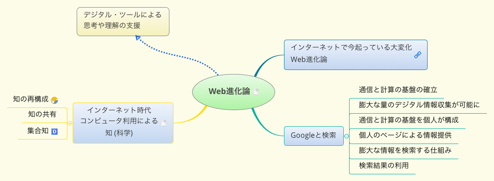

メモと思考とデジタルツール
この文書について
この文書はデジタル文書なので，できればブラウザを使って読んほしいです。
この文書のURLはです。
この文書は，Emacs Org-mode という，アウトライナーで書かれています。
まえがき
皆さんは，この講座を受ける目的は何ですか？
- おもしろそう，やってみたい
- 自分の知識を増やしたい
- 自分の知識を確認したい
- 必要なので，理解したい
- 自分の知識としたい
- 全く知らなかったものを，知りたい
- 曖昧だったものを，確定したい
- 自分とは 違う考え方を知りたい
自分の理解や知識って何ですか？
- 言葉，項目について，思い出すことがら
- 意味 what
- 最小限の登場人物 - 分化
- それらの間の関係
- 方法 how
- 最小限の登場人物
- それらの間の関係をどう築くか
- 理由 why
- 外の関連項目との関係
- 意味 what
- 思い出す関連項目
- 上位のこと(概念)
- 下位のこと(概念)
- 似ているもの
- 反対のもの
コンピュータとインターネットは，自分が理解するために役立ちますか？
さて，次の質問です。自分が得た理解や知識をどう残し保存しますか？
- 頭の中に。なにかのキーワードをきっかけに思いだす(かもしれない)
- 自分が書いたメモや文章を，分類してとっておく
- 検索できるようにしたいなぁ
コンピュータとインターネットは，自分の知識を保存するために役立ちますか？
本講義では，コンピュータとインターネットを使って，人の知的活動を支援す る考え方やアプリケーションをデジタルツールと呼んでいます。
現在，Webの進化は，共同知を生み出しているのだと思います。

(XMindファイルのダウンロードはこちら./x_maps/04-Web進化論.xmind)
共同知は，検索できる知識の集まり。デジタルツールを通して， 検索しその存在を知り，読み書きします。 デジタルツールは人が考える助けをしてくれもします。
しかし，コンピュータを使って考えることが，本当に良いことなのか，未だ判 断できない，というのが本音です。皆さんと一緒に考えられたら思っています。
講義の目的
講師が講義内容について検討した際の，思考をメモしたマインド・マップ をお見せします。
いろいろ検討した結果が以下です:
- 考えることについて考える，メモは考えたことを記録すること
- 人の文章や考えを理解することについて考え，そのための技術を考える
- 自分の考えをまとめることについて考え，そのための技術について考える
- 思考過程について考え，知的思考の技術について考える
- メモのための(デジタル)技術の活用について考え，技術を習得する
講義の概要
やり方
講義を通して，いろいろな考え方を紹介し，私の理解を説明します。 一緒に考え，自分の考えをメモにまとめてください。
講義の最後に，自分のメモを振り返り，見直し・修正し，自分の意見・感 想を書いて，レポートとして提出してください。
内容一覧
導入
放送大学のPCの使い方
Google アカウント
- メールのために，G Suite を使っているんですね。
- 学生番号@campus.ouj.ac.jpがグーグル・アカウント
- 自然と，Google の他の機能が使える。
- Google の使い方のために，下記サイトを見てみましょう：
- 自分のグーグルアカウントを確かめましょう。 講師のアカウントは，spct03a@campus.ouj.ac.jp です。
- 本講義用のメーリングリストを作成しましたので，使ってみます。
講義の情報を配信します。
- 皆さんは，Gmailを使って講師のメールが届いているか確認してくださ い。
- Google Driveを使ってみましょう。
- 講師の用意した，Google Driveのフォルダーを使ってみましょう。
- スマホでGoogleDriveを使ってみましょう。
- iPhoneの人は GoogleDrive アプリをダウンロードしてみてください。
- 講師へメール，ドライブの利用など
ここまでで，うまくいけば，Googleを通して，講師と共同作業することが 可能になったはずです。
はじまり
講義のサイト紹介
USB内の Chrome か Firefox を使ってみてください。 履歴の中に，講義のためのサイトがあります。探してみてください。
講師について
- プログラミングは，文書の作成 抽象の話
- 計算論的思考
- ウェブとデジタルツールの活用
- Emacs, Org-mode, 共有
図で考える，シンプルになる
僕が『図で考える。シンプルになる。』を書いた理由 | ビジュアルシンキ ング 櫻田潤, 2017年10月11日 を読んで，
- 7つの図の使い方を学び，図の使い方の演習をおこいます。
- この演習を通して，考えることや，考えたことを，図で表わすことの意味 を実感してください。
メモと思考と理解と知識
ここでは，メモして，理解して，知識とする，こと についての，講師が考えていることを， マップやアウトラインで残しました。
それを使って説明します。
思考とは
考えて，理解し，覚えること
- (考える) 関連項目を集めて，
- (考える) 項目関係を把握し，
- (理解する) 項目と関係を，構造化する
- (納得する) 既存の知識と融合する
- (覚える) 時間が経っても，知識の欠片を切っ掛けに，思い出せ，説明できる
- 幾つかのキーワードを切っ掛けに全体が思いだせる
考えるための項目，考えたプロセス，考えてできた項目間の関係， 理解した構造，覚える
メモとは
思考の基本原理
- 2つの項目を一緒に並べ，
- 2つの項目の間にある関係を認識し，
- 2つの項目のその関係を一纏めにし，
- 全体に名前を付る
思考とメモ
- 理解し，まとめること
- 発想すること
- 思考はプロセス
知的思考の技術とメモの必要性
- 思考過程の枠化と順化，
- 思考対象と思考過程の記録
- 思考結果の記録と外化
- 思考し続けるためには
デジタルツールによる思考の支援
インターネットとコンピュータを前提にした文書の読み書きそろばんをお こなうためのツール。
配布資料の コンピュータとインターネットの利用目的.xmindと， 思考とメモと文書のためのデジタル・ツール.xmind を見てください。
- WebとWeb乗のデジタル文書技術
- 文書間の構造 ハイパーテキスト
- 文書の構造 アウトライン
- 文書の体裁 マークアップ
- 知識の表現 マインドまっぷ
ハイパーリンク - Wikipedia]] を読んで
ハイパーリンク - Wikipedia を読んで
HyperText
プログラムが参照可能な HyperLink を埋め込んだ文章のこと。
作者は，HyperLinkで，文書の内外の文書の参照や，プログラムの実行を意 図する。
HyperTextを解釈するプログラム (ブラウザ) が存在する。
読者は，ブラウザで，HyperTextを読む。
HyperLinkを参照することで，作者が意図した，文書の内外の文書を表示や， プログラムの実行を行なう。
World Wide Web（WWW）における HTML が代表例。
HyperLink
- HyperText 中， ブラウザによって解釈される文字列のこと。
- HyperText を解釈表示するプログラムが存在し，そのプログラムがリンクを参 照することで，作者が意図する行為がなされる。
- ハイパーリンク（Hyperlink）とは、ハイパーテキストにおいて、 複数の文書を結び付ける役割を担う「参照」である。
- ハイパーテキストの根幹をなす。
- 単に「リンク」とも呼ばれる。
- World Wide Web（WWW）における Uniform Resource Locator（URL）が代表例。
HTMLによるハイパーリンク
HyperText Markup Language（HTML）では、次の様 にa要素（アンカー要素）を用いる
<a href="http://ja.wikipedia.org/">Wikipedia</a>
以上の記述によって、以下の様なリンクが生成される。
hypertext, web
ウェブの根幹を成す「ハイパーテキスト」が誕生してから50年が経過、単語を生み出したテッド・ネルソンがその秘密を語る - GIGAZINE
Webの考案者ティム・バーナーズ＝リーが「質問ある？」と掲示板に降臨して次々と回答 - GIGAZINE http://gigazine.net/news/20140313-ama-tim-berners-lee/
- メモと思考のためのデジタル技術
- outliner
- mindmap
markup とは
マークアップとは - Markupの意味と基本知識 | マイナビクリエイター
- 文書構造（テキスト）や視覚表現（装飾）などの情報を、
- 読者 やコンピューターが正しく認識できるように、
- タイトルや見出しなどの各構成要素に「タグ」と呼ばれる識別のための目印を使い、
- 意味付け を行っていくことを意味します。
markdown とは
手軽な方法でマークアップすること。 見出し，段落，箇条書きなどを簡単に書く。
思考のためのデジタルツール
アウトライナーとは，使い方
アウトライナーであらすじを捉える
マインドマップとは，使い方
発想し一望するために MindMap で考える
- mindmap
- 水平思考
- 放射思考
思考の方法
ここでは，思考する方法について，考えてみます。
抽象と分解 (再度)
計算論的思考
wing.indd - ct-japanese.pdf https://www.cs.cmu.edu/afs/cs/usr/wing/www/ct-japanese.pdf
情報処理的に考えることとその評価基準
批判的思考
情報リテラシー
溢れる情報を読み解く技術，
データと情報と知識の違いを知る
知識から情報へ，情報発信
GTD – (思考を) 続けるためのメモの技術
- やらなければならない事が沢山あるときに，
- それらをこなしつつ，
- 心が安定した状態を長く保つためのメモの技術
- 関心項目を書き出す，
- 関連する項目をすべて洗い出し，
- 項目間の依存関係で構造化し，
- 全てを書き出し，一旦忘れる
- 適当な項目を選び，行なう
トップダウンに考えて， ボトムアップに実行していく，方法。
ソフトウェア開発手法，
- スパイラル，
- テスト駆動開発はボトムアップ
大きな目標に向って，ボトムアップに考え，すこしづつ実行していく方法
発想法
本章で行なうこと
「なにか新しいことを思いつく」ことについて考えてみましょう。
ここでは，下記の発想法について，概観し説明を加えますので，自分なり の考えをまとめてみましょう。
KJ法
下記サイトを概観してみましょう。
まとめると，
- 思いつくまま，関連情報をカードに書きだし，
- 関連するものをグループ化し，
- グループに見出しをつける。
- グループに対して，同じグループ化を行い，グループ化できなくなるま で，繰り返す。
- グループ間の関係について考える
- グループとグループ間の関係を説明する文章を書く
アイディアの作り方
水平思考 - Wikipedia
- 深かく思考する垂直思考に対して
- 思考に広がりをもたせる
マインドマップ
放射思考 (Mindmap) です。
発想法として，マインドマップを使うことについて，考えてみてください。
この章の作業
知的思考のための7つのステップの理解
下記の内容を理解し，まとめを作成しましょう。
自分の知的思考技術について考えましょう。
知的思考技術についてのまとめメモを作成してください。
知的思考の技術―考えるフレームを強化する7つのステップの思考術
知的思考の技術勉強_imap.pdf は講師の読書ノート (手書マインドマップ)です。
下記は，本の各章のまとめを，さらに簡潔に記述し直したものです。
目的探索の思考
- 考え方のポイント
- 思考や行動の目的を明らかにするために、
- 何かを始めるときには自分自身に対して「そもそも何のために？」とい う問いかけを行うことが大切である。
- 陥りやすい失敗
- そもそも目的を考えていない。
- 目的は考えてはいるが妥当性が低い。
- かつては高かった目的の妥当性がいつしか失われてしまった。
主なツール
- 状況の構造化図
- 目的の連鎖
観察の思考
- 考え方のポイント
- 心理的要因や発信者の意図に惑わされない。
- 偏りなく多面的に物事を捉える。
- 陥りやすい失敗
- バイアスによる阻害。
- 他社の主張をそのまま受け入れてしまう。
- ウソに騙されてしまう。
- 主なツール
- 4分割マトリックス
発想の思考
- 考え方のポイント
- 豊かなアイデアを得るためには、3つのブロックで思考を足止めされる ことなく自ら積極的に思考し、「量が質を生む」の原則を貫きとおすこ とが大切である。
- 偏りなく多面的に物事を捉える。
- 陥りやすい失敗
- アイデアが天から降ってくるのを期待して、思考することなく、ただ待 ち続けてしまう。
- 発散思考と収束思考を同時に使って、思考の効率が低下する。
- 認識、感情、文化の3つのブロックに足止めされてしまい、モノの見方・ 考え方が偏ってしまう。
- 主なツール
- ブレイン・ストーミング法（BS法）
- 属性列挙法
- チェックリスト法
- 欠点列挙法
- 希望点列挙法
- ゴードン法
- NM法
分類の思考
- 考え方のポイント
- 分類とは、思考対象となる情報をその思考の目的に従って「違う」部分 で分け、「同じ」部分でくくること。
- 分類することによって、わからないことがわかるようになる。複雑なも のが単純化され、あいまいな状況が解明され、物事が整理されて使いや すくなるといったさまざまなメリットを享受できる。
- 陥りやすい失敗
- 事象や問題を漠然と捉えてしまう。
- 思考の目的にあわない分類基準を設定してしまう。
- 分ける際にモレやダブリがある。
- 主なツール
- 目的にあった分類基準を設定する。
- 抽象水準を統一する。
- モレなくダブリなく分ける。（MECE）
構造化の思考
- 考え方のポイント
- 構造化とは、思考対象について分類した構成要素（部分）がどのような 関係（つながり方）にあるのかを明らかにし、思考対象（全体）の意味 を理解すること。
- この世の中に存在するものは、さまざまな要素が依存しあい、影響をあ たえあい、関連しあって存在している。何かを知ろうとして思考するた めには、それらすべての関係を押さえなければならない。
- 陥りやすい失敗
- 組織設計、企画書、プレゼンテーションなど、あらゆるビジネスシーン で分類することはできても、「くくる」「まとめる」という構造化の思 考が弱い。
- 部分は理解できるが、全体として何を伝えたいのかわからなくなってし まう。
- 人は「木を見て森を見ないタイプ」と「森を見て木を見ないタイプ」に 分かれる。木も森も両方捉えるものの見方ができない。
- 主なツール
- ツリー構造
- マトリックス構造
- プロセス構造
意思決定の思考
- 意思決定には、とっさの意思決定とじっくり考える意思決定がある。
- 特にとっさの意思決定の際には、意思決定の先送りはしない。
- じっくり考える意思決定から”正しい反応パッケージ”を複数用意しておく。
- 反復訓練により迅速に”正しい反応パッケージ”を選択できるようにしておく。
表現の思考
- 思考の幅を広げるためには表現の手段を多く持つこと。
- どのようなことでも言葉で表現（文章に書く）することを習慣付けること。
- 数字で表現することに日頃から慣れておくこと。
- 図解は見栄えではなく、シンプルでわかりやすいこと。
全体のまとめ・レポート作成
メモと思考とデジタル技術を振り返り， まとめのメモを作成してください。